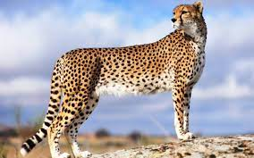
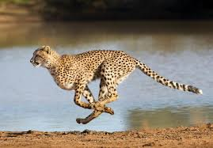

Тело у гепардов и леопардов стройное, гибкое, хвост длинный. Длина тела гепарда достигает 123-150 см, длина тела леопарда составляет 91-180 см. Длина хвоста гепарда достигает 63-75 см, хвост леопарда значительно длиннее и составляет 75-110 см. Важное отличие гепарда от леопарда заключается в скорости бега животных.
Питаются гепарды в основном копытными, газелями и антилопами. Эти животные составляют 90% рациона гепардов. Также охотятся они и на зайцев, молодых страусов и других крупных птиц. В отличие от многих видов кошачьих, охотящихся в ночное время, гепарды предпочитают охотиться днем.
 